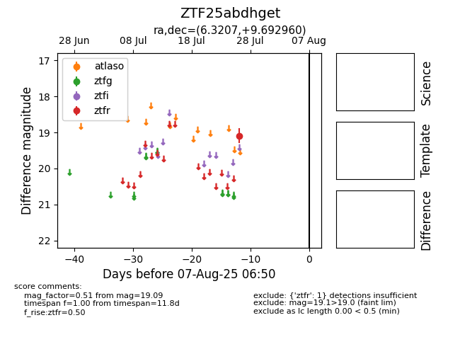

Target ZTF25abdhget at 2025-08-06 17:45, see:
FINK: fink-portal.org/ZTF25abdhget
Lasair: lasair-ztf.lsst.ac.uk/objects/ZTF25abdhget
ALeRCE: alerce.online/object/ZTF25abdhget
alt names
ZTF25abdhget (ztf,fink)
coordinates:
equatorial (ra, dec) = (6.3207,+9.69296)
galactic (l, b) = (112.2727,-52.63663)
photometry
last ztfr=19.09
1 ztfr detections
